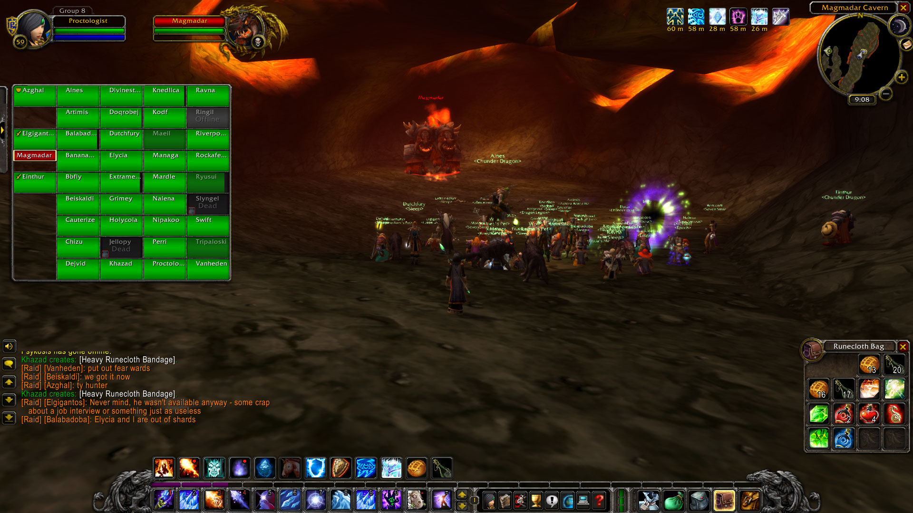
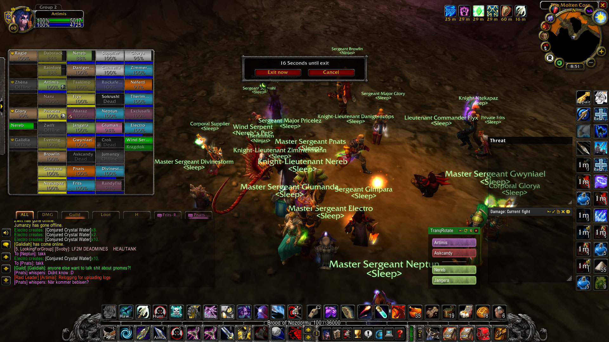
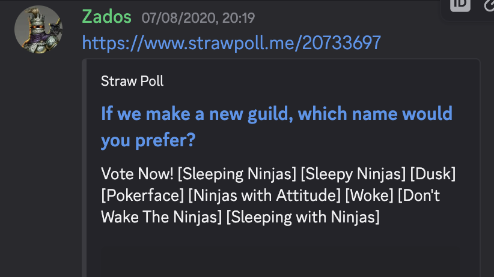
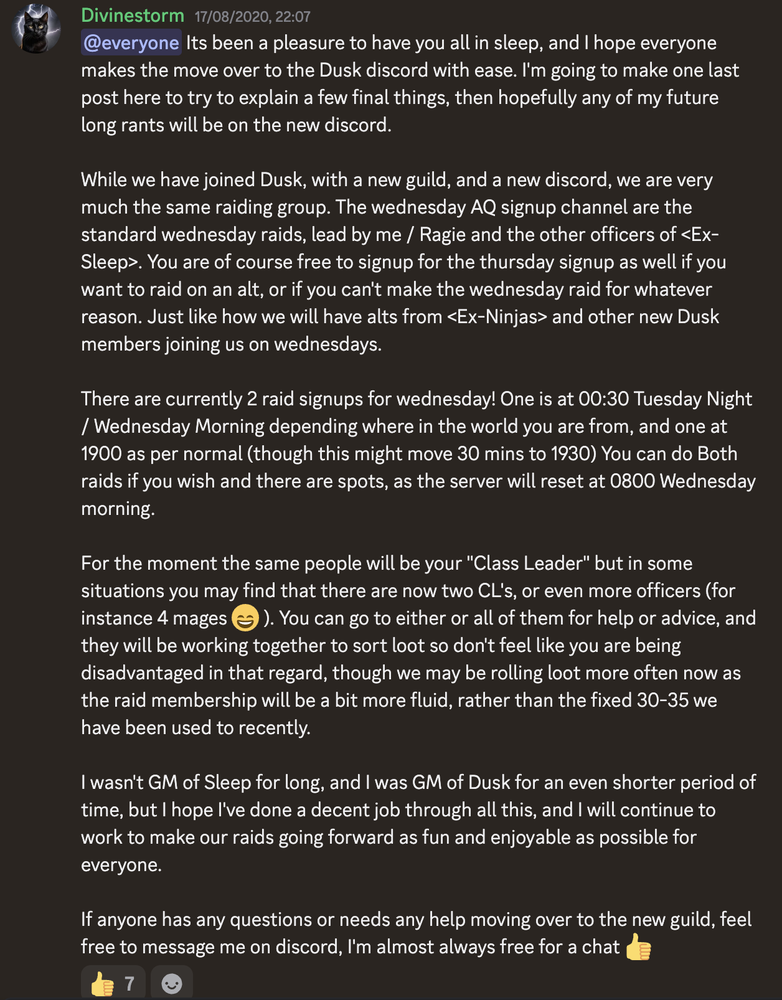
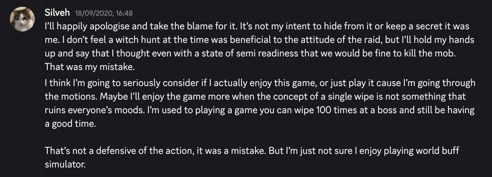
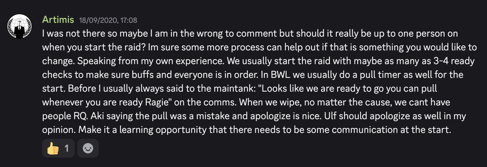
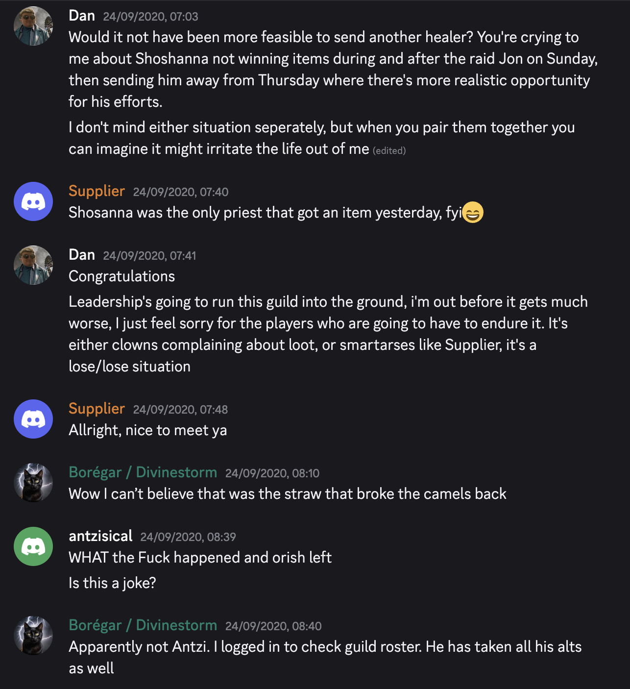
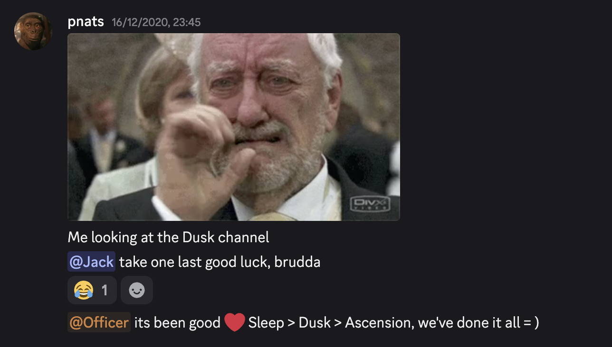

Contents
- The Second Time Around — a hunter named Diod, a launch queue, and a guild built on a spreadsheet · autumn 2019 – spring 2020
- Dusk — the guild given away, the merger that was secretly an absorption, and one crisis a fortnight · summer – autumn 2020
- Fourteen Days in December — the last raid of Classic, and what it cost to clear it · December 2020
The Second Time Around
A night elf hunter named Diod, a launch-day queue, and how a guild called Sleep assembled itself around a spreadsheet. Autumn 2019 to spring 2020.
Diod
The story starts fifteen years before the first log. In 2005, a teenager in Nittedal played the original World of Warcraft as Diod, a night elf hunter on Frostwhisper — an era of carrying computers to each other's houses and losing whole afternoons in Stranglethorn Vale. Nobody understood gear. That was never the point. When Classic launched on 27 August 2019, Artimis came back to recreate that feeling as another night elf hunter — and half of Nittedal came with him. The first archived message of the whole story is Fnats, level 10, asking from the launch-day queue: "Er du i queue?"
Sleep
The guild he found — probably through a recruitment shout in Ironforge — was called Sleep, and it committed to the joke: its ranks ran Awake, Light Sleeper, Deep Sleeper, REM Sleeper, Dreamer. Its founder was the priest Dejvid, and his pitch was a helpful community for newcomers and veterans alike. Artimis joined to collect hunter tier pieces. Within a month he was in the officer meetings, running the hunter channel and the tranquilizing-shot rotation. He also volunteered for the signup sheets, which turned out to decide the rest of his Classic career. The guild's practical first Molten Core raid, on 2 October 2019, survives as a screenshot of a nearly full room gathering before Magmadar, guild tags still mixed, a team assembling itself in real time.

Then, on 11 November 2019, a hunter named Zados sent his class leader a polite suggestion: nobody from the guild was uploading to Warcraft Logs; perhaps the officers should look into it? "Sorry to bother you," he signed off. Artimis turned on advanced combat logging the next day. Five hundred and five raids are searchable on this site because of that message.
The Nittedal circle becomes visible in those first logs rather than in one surviving recruitment post. The 13 November full clear includes Artimis, Fnats, Deliz, Ragie and Exclus. After New Year, Pnats and Galidia appear too. These are first surviving raid dates, not necessarily the nights they joined. What had started as Artimis returning to an old game was becoming a home crew inside a much larger guild.
Onyxia and Ragnaros
Progress came faster than the surviving logs suggest. On 13 October Sleep recorded its first documented Onyxia kill and finished the Molten Core run at eight bosses out of ten. A month later, the first complete report preserved by Zados's suggestion shows all ten Molten Core bosses dying without a wipe. Artimis remembers 13 November as probably the first Ragnaros kill, but no earlier encounter logs survive to prove it. What began as a mixed group in the Magmadar corridor had become a full-clear raid in six weeks.
Onyxia settled into double groups and Molten Core became routine. Then the loot gave the farm nights a story of their own. On 29 December another Ragnaros kill produced the Choker of the Fire Lord, one of the rarest drops in the raid and best-in-slot for every caster and every healer in it. The young loot rules gave damage casters priority, on the reasonable argument that damage clears content. The healers noticed. Nobody said much that night; the argument the necklace started would outlive the guild that looted it. Five weeks later Deliz — Nittedal, healer, one of the guild's own — quit the game entirely over how healers were treated, the Choker policy named among his reasons. He was the story's first fairness casualty. His question, what a raid owes the people who keep it alive but never top a meter, came back in every crisis the guild ever had.
The handover
On 1 February 2020, Dejvid transferred the Discord and stepped back; Artimis, already the guild's engine, became its leader in name as well. His first fortnight set the tone for the year. He accidentally recruited his most loyal tank by mailing a cloak to a stranger he had mistaken for someone else, then inviting him to Blackwing Lair anyway. The stranger was Glory. The same month, Glorya — another player from the Nittedal circle — was recruited into the healer gap Deliz left behind. The confusion between their names torments this archive to this day.
Ten days in Blackwing Lair
Blackwing Lair opened on 13 February and Sleep entered on day one. The first surviving progression log begins three days later. Razorgore fell on the second pull and Vaelastrasz on the fifth. Broodlord died on the first. Then Firemaw stopped the raid eleven times. They left with the drake at fifteen percent and their first real wall of the new tier.
On 19 February Firemaw died on the first attempt. Sleep cleared the remaining drakes and finished the night with Chromaggus, leaving only the throne room. Four days later, Nefarian died on the second pull. Blackwing Lair was eight bosses long and ten days old. For a guild built around helping newcomers, clearing it that quickly was the first proof that being welcoming and being capable were not opposites.
The machine
What made Sleep unusual wasn't its kill times — it was its paperwork. The attendance workbook. Ragie's gear-weight formulas, sketched in January DMs: parses, consumables, enchants, attendance, all scored. The loot log, born 29 March 2020 with a plea that every class leader record every drop. A raider-rank system that promised, in writing, that showing up mattered. The spreadsheets were the guild's constitution, and like all constitutions they created their own politics. When Kugel vanished for twenty-three days with a legendary Binding, Zhèna stepped into the tank gap and became part of the replacement plan. The paladin leader Durm then lost his account to a hacker days after winning the argument over the Eye of Sulfuras. Exclus covered the class-leader gap for a week on Exclusafk.
The Eye debate brought another friend from home into the record. Panadin accepted second place behind Thepaladin and kept showing up. Then, on 18 March, Shakey won the roll for the first Rejuvenating Gem and Fnats — who had fought two months for a fairer queue — paused the game the same evening, on good terms and out of patience, with a sentence every guild leader knows: "as guild leader, you unfortunately stand in the crossfire."
The Gem was wanted by every healing class and stayed useful across several phases. Sleep's proposed answer was to let one healer from each class qualify for the roll. It sounded fair until the first one dropped and every unresolved question arrived with it. Who qualified, and who decided? Could months of work create a claim the rules could not express? Fnats had helped design priorities for items like this and never received one. His exams and accumulated frustration, not the single roll, were why he stepped away. Still, the timing made the lesson difficult to miss. A transparent process could distribute an item without resolving what people believed they deserved. Fnats later returned; his final local raid log is 30 August, not the night he first stepped back.
The spreadsheet could say no even to a legendary. On 12 March Thepaladin admitted he had secretly bought Nightfall after the officers rejected funding a second axe. Three days later Sleep tested it in Molten Core and measured the debuff uptime. His damage was then compared with a regular melee spot. Artimis's verdict was plain: "Does not seem worth it." Thepaladin kept the axe. The raid kept the numbers.
The people inside the machine
Calling Artimis the guild leader makes the story tidier than the guild ever was. Sleep worked because responsibility spread outward. Luivi was tracking druid loot before Artimis became Guild Master. Pnats turned healing from individual meters into timed tank assignments and raid coverage. Zados brought in Warcraft Logs, then helped build the hunter gear packages that kept every hunter from waiting for the same drop. The systems belonged to the people willing to maintain them.
Supplier arrived because Sleep needed healers. The exact invitation is lost, but the speed of what followed is not. By 8 March he had respecced Holy and completed his Molten Core attunement. His first Sleep signup followed. On the 23rd he received the Eye of Divinity and completed the Benediction event on his first attempt. Within days of joining he was already diagnosing weak dispels and overhealing. He recommended new addons, then proposed clearer assignments. He had not so much joined the healing team as begun repairing it.
Some of the Nittedal contribution was quieter. Galidia was the dependable warrior officers named when a tank was needed at short notice. Neptun, a mage, first appears in the logs on 29 March and stayed into the Naxxramas core. Neither has a documented recruitment announcement, so the logs mark their presence rather than the date they joined.
By June Supplier was the priest leader, publishing loot priorities before raids and offering to bench himself if all five priests showed up. Divinestorm had risen the same way. Before anyone considered him for Guild Master, he noticed that mage coordination depended on three people, respected the existing class leader's authority, then built the roster and loot document when the job became his. In Sleep, leadership was usually an appointment made after someone had already started doing the work.
By early summer the machine was humming and its operator was tired. Sleep was clearing everything Classic had opened, recruiting faster than it lost people, and quietly wearing out the handful of people who ran it. The next chapter of this story is what happened when Artimis tried to give it away — twice — and what the guild became instead.
Sources: the raid archive from 2019-10-02 onward, the Sleep Discord export, guild documents (ranks, raider rules), the 2019–2020 private messages of Fnats, Zados, Ragie, Deliz and Glory (quoted with permission), Supplier's archived raid-preparation thread, and Artimis's own recollections — marked as memory where the records are silent.
Dusk
A guild master tries to give his guild away, a rival guild privately plans to absorb it, and the merged creature proves everyone wrong — then nearly tears itself apart anyway. Summer and autumn, 2020.
Giving it away
By spring 2020 Artimis had learned what every volunteer institution eventually teaches its founder-figure: the job is permanent unless you make it stop. His first attempt was Kodf, the rogue leader whose loot system ran so cleanly it became proverbial — offered the guild outright, he declined, and on 9 July followed his own road elsewhere. The second attempt changed history: in July, Sleep offered the guild-master seat to Luivi, the druid leader. He didn't have time for it either — but instead of just saying no, he asked his contacts in a guild called Ninjas whether they'd consider merging.
Kodf's departure exposed how much of Sleep's stability had lived in one class leader. The senior rogues declined the vacancy, so a newcomer named Twx took it after three raids and replaced seniority with performance loot. Within two weeks he had awarded himself tier pieces and Tsakimo had quit. Ntekapaz was asking for Kodf's system back. Twx was gone before Dusk formed. The merger did not begin with two stable guilds; Sleep was already trying to replace one of the people who made its rules work.
Ninjas said yes in public and something else in private. Their officer chat from those weeks — preserved in full — is a study in swagger: "to call it a merger is a meme, since we don't need them at all. Better to call it absorbing their guild." Bandito, after watching a Sleep raid to scout the merchandise, reported back: "I highly doubt they've got the quality to clear AQ." The Ninjas officers took a formal vote by emoji on 15 August. The proposal carried.
The handover
Between those two dates, Artimis staged the most graceful exit the story contains. On the evening of 2 August 2020, Nefarian died twice. Artimis remembers telling the raid after the kill that he was going to be a father and that Divinestorm would be the new Guild Master. The spoken announcement has not been recovered, but the guild-system handoff, the congratulations and Artimis's public farewell all survive. Memory and record meet on the same evening: a planned abdication, mid-raid, after a boss kill.

A new name
The merged guild needed a name neither side owned, so they polled one into existence: Dusk. It was a new guild on paper — both rosters walked into it. The poll made the principle visible: neither Sleep nor Ninjas would absorb the other.


The doubters answered
Dusk had something to prove immediately because the Ninjas doubts came with a deadline: Ahn'Qiraj. On 18 August, its first raid night, four bosses died without a wipe before the Twin Emperors stopped the advance. Two nights later the Twins fell on the third pull. C'Thun survived four attempts; one reached seven percent health.
When the raid returned on 23 August, C'Thun died on the first pull. Ouro followed the same way. Five days after Dusk's first raid, the boss that had defined the tier was dead. Only Viscidus held out. Killing that poison elemental required roughly eight hundred and forty venom sacs, collected from Lower Blackrock Spire by a volunteer supply chain. On 3 September, after two more wipes, Viscidus dissolved on the third attempt. Dusk was 9/9 sixteen days after it began raiding. The doubters had their answer, and to their credit, they continued as if they had never doubted.
One crisis a fortnight
What AQ couldn't do to Dusk, Dusk nearly did to itself. The autumn officer channel reads like a guild getting tested every two weeks and barely passing. Late August: the Nayla case — an apparent ninja pull that turned out to be a misunderstanding, stacked on older friction, argued through a full night of officer philosophy ("judge, jury and executioner" versus "loyalty you can't buy") and settled as "one final chance with punishment — call it a fresh start for Dusk."
Two older Sleep names disappear from the raid record before the loudest crisis arrived. Pricelez's last guild raid was 2 September, after ninety-eight logged appearances; Conoflow's was 13 September, after ninety-five. Neither left a surviving goodbye. Their dates belong to the attrition story, but the archive cannot say whether the coming disputes caused either departure.
17 September: Aki, a tank and the man who had built the Ninjas' Discord server, pulled at the AQ entrance with nobody ready. The world buffs evaporated. Ulfhild, the guild's best hunter and a man who played for the parse, quit the raid on the spot. The rogues nearly walked with him; Antzi, their class leader, admitted afterwards that he'd talked them into staying with arguments he didn't believe. The fight that followed ran three days and came down to one question: is this a hardcore guild or a home? Nobody settled it. Aki apologised, wondered out loud if he even enjoyed the game anymore, and left the guild that week.


A week later, Orish quit live in the officer channel. He was the Thursday raid's healing brain and the leadership's fiercest internal critic, and his last message was "Leadership's going to run this guild into the ground, I'm out before it gets much worse." That made two ex-Ninjas officers gone in seven days.

The response, within the hour, was structural: class leaders lost their seats in the inner room, and the officer chat split in two. And on the 30th of September the autumn delivered its finale. The surviving accounts agree on the opening act: Yeat kicked Snjór. Henne said someone then reinvited Snjór and that he, or his alt, used the restored rank to kick Henne. Snjór's account four days later agreed that Yeat had kicked him but disputed the surrounding blame. The archive does not establish who authorized the reinvite or the second kick, nor why each person in the protest wave left.
The consequences are clearer than the cause. Yeat transferred Guild Master to Missdotty and left. By the next morning, thirty-two people were signed for the coming raid and eight of those names belonged to people who had left. Divinestorm, mediating from a work trip, handled member communication while Missdotty restricted kick access. Henne's own condition for peace was the tersest in the archive: "Keep Snjór away from me and he can take the drama with him. And I'm good." The reform that outlived the mess became guild doctrine, written by Artimis in the class-leader channel: if you don't have time to explain, you don't have time to kick people.
The quiet erosion
Under the fireworks, something slower was happening: the old Sleep establishment was losing the building. In the September admin reshuffle, the founders' names — Artimis, Zados, Celed — were flagged off the server-admin list, and when Divinestorm deleted a channel Zados liked, his reply is the driest sentence Dusk produced: "I guess I'm not an officer anymore, so whatever." Divinestorm, meanwhile, had become the guild's center of gravity. He mediated the crises, wrote the loot doctrine (attendance, world buffs, consumes, consistency), and personally ran the idol economy, item by item. He also absorbed abuse that would have broken a pettier leader. By November the transformation was complete in all but ceremony: Dusk was Divinestorm's guild, run well, by a mage the Sleep founders had recruited eight months earlier.
The Nittedal circle was thinning too, but not through one shared goodbye. Panadin's last local raid is 12 July. Fnats last appears on 30 August, Exclus on 20 September, and Galidia and Zhèna on 7 October. None of those dates comes with a preserved departure message, so they are boundaries in the logs, not explanations. Deliz remained the exception: the one friend whose exit survives in his own words.
November gave the era its two closing images. On the 7th, Glory's second Binding dropped and the guild announced a completed Thunderfury the same evening: the loyalist's crowning, three weeks before his heartbreak. And Nayla's last tracked raid was eleven days later, on the 18th. Later that evening Artimis was already saying he was sorry to see Nayla go; Nayla did not answer the question of why. On the 25th, already accepted by a new guild, he sent an image and accused Dusk's leader of a "last desperate act of evilness." The image's context is incomplete, so it documents the bitterness of the ending, not its immediate cause. Behind both endings, quietly, stood Naxxramas — frost-resistance spreadsheets filling in, a contingency tank being groomed, and a raid that had no idea it had fourteen days of existence left. That story is chapter three.
Sources: the Dusk officer channel (13,902 messages, both the Ninjas era and the merged guild), the Sleep server export, raid logs, and the private messages of Luivi, Kodf, Zados, Henne and Nayla, quoted with permission. The Ninjas quotations are from their own officer channel, preserved in the merged server.
Fourteen Days in December
How a friendly guild cleared the last raid of Classic — and stopped existing to do it. December 2020, reconstructed from the raid logs, the officer channel, and private messages from several of the people involved.
The wall
On the first Sunday of December 2020, Dusk walked into Naxxramas alone and killed three bosses. By any earlier standard of the guild it was a fine night — Artimis clipped the Faerlina kill, which would turn out to be the last recording of Dusk raiding as itself. But Naxxramas was built to punish exactly what Dusk was: a community first and a roster second. Divinestorm's review of the run, in the officer channel, was two words: "utter shit".
The next evening the floor gave way. Edomedo — the quiet warrior the officers had been grooming as their contingency tank — told Divinestorm he was quitting the game. Divinestorm looked at the roster that night and reached the conclusion that ended an era: there were no tanks for the Four Horsemen, and no way to make any inside the guild.
The pivot
What happened next took about a day. On December 8th Divinestorm laid out the case in officer chat and reported the solution he had already found: Ascension — a guild the archive had barely met, except as a world-chat troll to be ignored back in September — was "prepared to bench down to 20 people on Wednesday and give us 20 slots." Their officers had names now, Devou the warrior and Hedara the druid, and they were candid about the endgame: they would like to stay Ascension, and absorb Dusk. Not everyone was charmed — Zados registered "a pretty bad impression of ascension players so far" — but nobody had a second plan.
No Ascension negotiation transcript survives. Their position reaches this archive through Divinestorm's report of the call and through what their officers did next. Devou controlled the joint composition and, when his own warrior could not attend on 9 December, offered Dusk a third hunter place. The raid log is the independent boundary: forty-one names passed through a forty-player team built from twenty returning Dusk raiders and twenty Ascension players, with one substitution. It proves the arrangement, not every claim made while negotiating it.
Twenty spots meant twenty benches, and the cut fell hardest on the classes Ascension already had. The hunters got the worst arithmetic: Ascension wanted two hunter spots in a forty-man raid; Dusk had three hunters who had carried the guild for a year. Zados, handed the impossible job of choosing, negotiated it into a three-week rotation between himself, Nereb and Artimis — and Artimis, whose first child was due on the 28th, took the first bench to line his absence up with the hospital.
Pnats accepted the arithmetic and removed himself from it. After reading the proposal he wrote that Dusk's current team would most likely never survive to clear Naxxramas and called the merger "100% the only way to go." Then he stepped out, unable to promise the weekly consumable farm while playing Shadowlands too. The merger was not only leaders cutting other people; some of the people who agreed with it chose themselves for the bench.
The blitz
It worked. On December 9th the first joint raid killed six new bosses in one evening — Patchwerk, Grobbulus, Gluth, Thaddius, Heigan, Razuvious — and the kill videos carried both guild names in their titles. Artimis even got to be there: Devou's warrior couldn't make it, and the 21st spot passed to him. "Don't thank me," Divinestorm told him afterwards. "Thank Devou for understanding how much we wanted a 3rd hunter spot."
But the same speed that vindicated the merge hardened its logic. "Comp plus parse," as Fizzi put it — with limited spots you bring the players who perform. Attendance, the currency the guild had minted for a year, quietly stopped being legal tender. On the 12th, Artimis found out Divinestorm wouldn't spare him Frozen Runes for frost-resistance gear, and heard he'd been passed over for players with four and nine raids to their names against his hundred and twenty. His fury went to Zados in private, and Zados, who agreed with him, could only answer: "They have a hard-on for limiting hunter spots. I'll do what I can."
At eight minutes past midnight on December 14th, Zados delivered a message that would echo: Divinestorm said he'll bench you for Wednesday if you don't come tomorrow. Asked whether he agreed, Zados wrote: "I don't agree, no. But he does have the final say. Unfortunately."
The letter
Artimis spent the morning of the 14th writing. The letter made five demands: raiders before members, a spot held for the whole lockout, a place at least every other week for raider rank, bench decisions made collectively, and the optional Monday raid staying truly optional. It ended with a call for the members of Dusk to strike on Wednesday the 16th. He sent it to Shakey at 11:02 and to Glory at 11:20 — the tank who had been benched through every Four Horsemen wipe, and who had been told that afternoon he finally had a spot.
Only go on strike if your demands dont get a fair hearing. Risking losing far more than you gain. Of course i agree, more or less.
— Glory, 14 December 2020
The strike never fired, and the archive can now say exactly why. In the officers' channel that same morning, Divinestorm had opened his own reckoning: the twenty-plus-one spot mess, the hunter rotation, an admission of his own mix-ups. Meanwhile Pnats begged Artimis to bring the five points into the open: "You have many points. Which everyone should see." Artimis refused, with the sentence that explains the whole December record: "If I involve myself, it will only become about me." Shakey worked the back channel instead, taking the points to Divinestorm softly — and privately confessed he might not make the move to Ascension at all. By late afternoon Divinestorm was chasing Artimis directly: "I know you've been keeping up with the CL chat. I know your points. Let's just do this tonight and talk." At 18:34, they talked.
Supplier turned the private anger into a policy intervention. He had initially agreed to join a protest, then asked for concrete demands and warned against language that could destroy the guild. He carried a revised version to Divinestorm: rank priority subject to role minimums, whole-lockout places, rotation for retained Raiders, collective bench decisions, and a genuinely optional Monday. He even offered Artimis his own priest place on Lege. Artimis declined; the point was a rule others could rely on, not a private exception for himself.
And then December did the most December thing in the whole story. Artimis, conciliatory after the call, went out for his evening walk and offered to log on when he got back. The raid filled without him — and the Four Horsemen, the fight that had eaten twelve pulls on Sunday, died on the first attempt of the night at 19:42. Glory, whose promised spot had evaporated when a full forty showed up, listened to the winning briefing from the bench. Artimis watched Ragie's stream. "Happy to be part of a 13/15 team," he wrote. How much of that was sincere is anyone's guess. That night, Divinestorm invited him into the joint officer chat with Ascension. He accepted, and listened.
The first-pull chest held Corrupted Ashbringer. It went to Randyfist, and at 20:52 Artimis sent congratulations with a warning not to carry it into Light's Hope. The night of the strike letter ended with one of the game's most famous swords.
Neptun was in the winning Four Horsemen roster. It is his last local raid log, on 14 December; the archive preserves no goodbye or reason for what followed.
The change
On the 16th, the day the strike was supposed to happen, the guild dissolved instead. The deciding exchange was almost comically casual:
Divinestorm's plan was to have everyone leave Dusk together as they zoned into the raid. At a quarter to midnight, Pnats wrote the era its epitaph:

At 23:31, while the migration was happening, Rockafella was still mailing materials to the benched Artimis and asking for two flasks. The guild could dissolve faster than its consumables pipeline.
Glory left the same evening, "better to go during the change": a hundred-and-twenty-raid tank who was never given a single Horsemen pull, saying the guild had been his home and that a spot every other week would have kept him. Within a week he was tanking the Four Horsemen for someone else.
Fifteen of fifteen
Four days later it was done. Sapphiron died at 19:53 and Kel'Thuzad at 21:23 on December 20th. The last boss of vanilla World of Warcraft was dead fourteen days after Dusk first stepped into Naxxramas alone. Three wipes on the night; forty-three names in the log. Artimis streamed all of it, died early to a spell-batched ice block, and uploaded the video anyway — "I'll take credit for uploading it even if that's how I die." A few minutes past midnight Pnats sent him, verbatim: "Deiliiiig. We did it all!" — and Artimis answered "Bra jobba!!! Sykt kult at vi klarte det. Hadde ikke trodd det." Great job. Insanely cool that we made it. I didn't think we would.
Five people from Nittedal stood in that forty-three-name log: Artimis, Glorya, Pnats, Ragie and Supplier. For Artimis, Pnats and Ragie it was the last local guild raid. Supplier appears once more in early January, while Glorya's logs continue into February. It was not a single group departure. The friends who had arrived in layers faded from the raid archive the same way.
The epilogue happened quietly. Several of those who had stayed for the clear left the game within days, as they had said they would. Artimis's child arrived at the turn of the year ("Grattis som far!" reads the January message) and he kept raiding into the spring on whichever character was needed. And on the 11th of April 2021, in Glory's final local report, the guild's most-attended raider got the kill history had skipped him for: Glory's own Kel'Thuzad.
The local archive has one more entry, a small Ascension raid on 14 April. The wider logs continue after that. On 25 April, Divinestorm appears in two Naxxramas reports with Hedara, Bearinpants, Ihide, Mikasalord and Taptum.
On 12 May, Supplier posted one final inventory of Dusk: twenty-nine names, each paired with a tribute video.
Supplier's “Dusk list” · 12 May 2021, 11:08
- Supplier — video
- Shakey — video
- Glorya — video
- Carmelia — video
- Wandolina — video
- Priestå — video
- Pnats — video
- Luivi — video
- Sudeki — video
- Nayla — video
- Palaman — video
- Randyfist — video
- Artimis — video
- Jangera — video
- Pasmaarop — video
- Ragie — video
- Glory — video
- Naru — video
- Zhèna — video
- Jumanzy — video
- Divinestorm — video
- Sokrush — video
- Crok — video
- Gnogaine — video
- Belzebab — video
- Neptun — video
- Shadowheart — video
- Rockafella — video
- Flyx — video
Reconstructed from the Dusk Discord archive; names normalized to in-game characters.
A 15 May Naxxramas GDKP still carries Hadara, Hedara, Docthor, Saltylock and Taptum. They are traces of people continuing to play together, not proof that the old guild survived under another name.
Sources: the canonical raid archive (Warcraft Logs), the Dusk officer channel, and private messages quoted with permission — Glory, Zados, Shakey, Luivi, Pnats, Supplier and Divinestorm's conversations with Artimis, December 2020. Dates and kill times are from the local and external logs; where memories and records disagree, the records won. Corrections welcome — this is a living document.